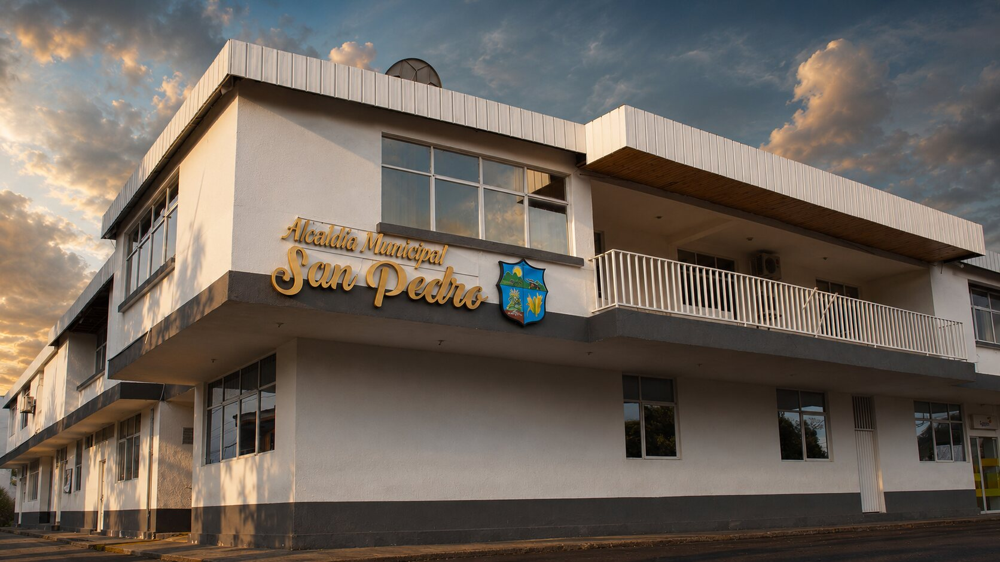

INFORME ESPECIAL
La gestión explicada sin perder el contexto.
Resultados, inversión, cobertura, retos y compromisos en una portada diseñada para comprender.
Leer edición 2025→Explore resultados, documentos, videos, compromisos e ideas ciudadanas en una experiencia visual, clara y organizada por vigencias.
Información pública organizada para ciudadanos, veedurías y comunidad.
Desplácese, arrastre o use las flechas para recorrer el portafolio. Cada proyecto abre una ficha con información, fotografías y enlaces relacionados.
Un recorrido visual por símbolos, arquitectura, memoria y vida pública antes de explorar el territorio por capas.

En San Pedro, el arte público convierte el paisaje cotidiano en un escenario donde la historia parece seguir sonando.
“San Pedro no solo se recorre: se escucha, se mira y se recuerda.”
Una mezcla entre periódico digital y portal institucional: historias claras, recursos visuales y acceso rápido a las fuentes.
Resultados, inversión, cobertura, retos y compromisos en una portada diseñada para comprender.
Leer edición 2025→0 ideas ciudadanas registradas en esta demostración.
Presente propuestas, apoye iniciativas y consulte la respuesta institucional.
Entrar al laboratorio →